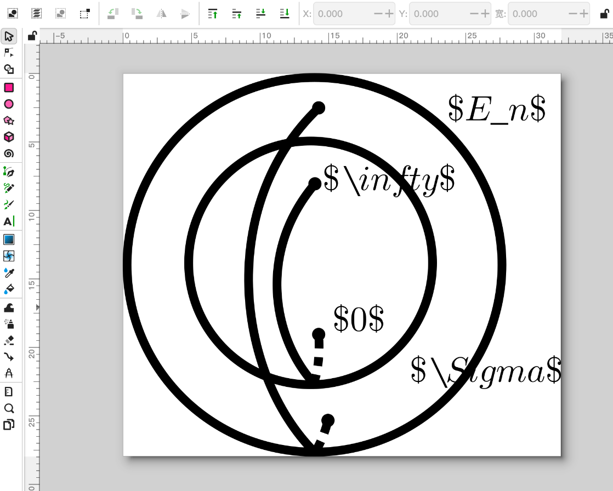
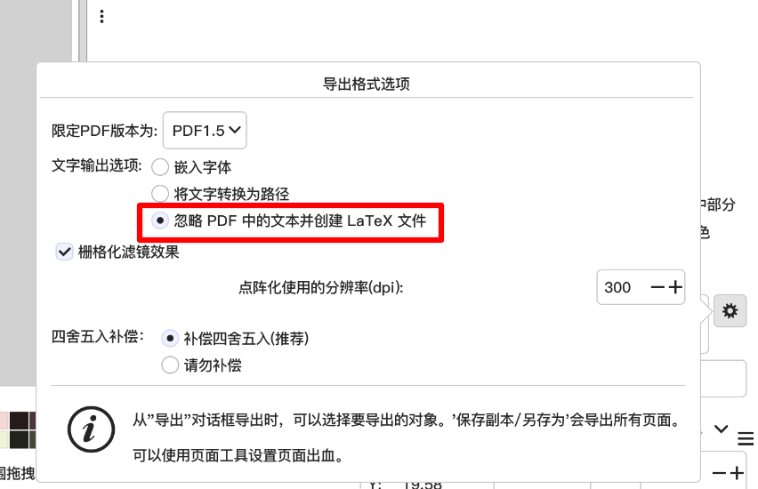
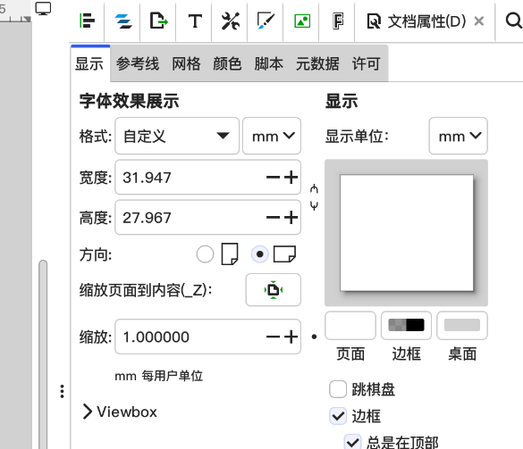

Inkscape是矢量图形编辑器，以自由软件许可发布与使用。该软件的开发目标是成为强大的绘图软件，且能完全遵循与支持XML、SVG及CSS等开放性的标准格式。
1.Inkscape中插入文本时直接使用LaTeX格式
像这样：

文字的大小与字体在导出时会被忽略，文字内容将会直接交给LaTeX处理，最后呈现的内容将与LaTeX中输入同样内容所编译出来的文字效果相同。因此你可以直接输入任何LaTeX代码。
2. 导出PDF
在Inkscape中选择导出，格式选择PDF，并使用“忽略PDF中的文本并创建LaTeX文件”选项。

3. 在LaTeX插入绘制好的文件
Inkscape会在你选择的路径下生成一个与pdf名称相同的.pdf_tex文件，将这个文件和pdf一起移动到你的LaTeX代码能访问到地方，然后使用
\input{<filename>.pdf_tex}
插入绘制好的图片。（如有需要，你也可以在外围套上figure环境并附上\caption）
导出效果一例
注意事项
宏包要求
导言区需要包含以下两个宏包：
\usepackage{xcolor}
\usepackage{graphicx}
路径要求
如果.pdf和.pdf_tex文件不与编译使用的.tex在同一目录下，需要包含以下宏包：
\usepackage{import}
并使用
\import{<path to file>}{<filename>.pdf_tex}
而不是
\input{<filename>.pdf_tex}
插入图片。
缩放图片
默认情况下，插入的图片大小与inkscape中定义的文档属性大小相同：

如果需要缩放图片，使用
\def\svgwidth{<desired width>}
\input{<filename>.pdf_tex}
注意，图片中的文本大小不会随绘图元素的缩放而缩放。如果你不希望如此，使用
\resizebox{<desired width>}{!}{\input{<filename>.pdf_tex}}
代替。
使用figure环境
也可以嵌套figure环境，给图片添加caption、居中
\begin{figure}[htbp]
\begin{center}
\input{<filename>.pdf_tex}
\end{center}
\caption{带有caption的图片}
\end{figure}
完整示例
本示例项目有如下文件树结构：
./
├── example.tex
├── fig2.pdf
├── fig2.pdf_tex
├── fig2.svg
└── figures
├── fig1.pdf
├── fig1.pdf_tex
└── fig1.svg
example.tex示例：
\documentclass{ctexart}
\usepackage{xcolor}
\usepackage{graphicx}
\usepackage{import}
\begin{document}
示例文档
\input{fig2.pdf_tex}
在子目录下的图片
\import{figures}{fig1.pdf_tex}
放大的图片：
\def\svgwidth{0.5\textwidth}
\input{fig2.pdf_tex}
\resizebox{0.5\textwidth}{!}{\input{fig2.pdf_tex}}
figure环境:
\begin{figure}[htbp]
\begin{center}
\input{fig2.pdf_tex}
\end{center}
\caption{带有caption的图片}
\end{figure}
\end{document}
你可以在这里下载一份副本
For more information, please see info/svg-inkscape on CTAN: